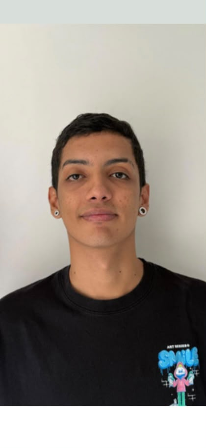

Perfil profesional / 01
Andres Felipe
Vasquez Velasco
Diseñador de software
Soy una persona comprometida, motivada por los retos y con interés en la computación, las ventas y los negocios. Mi formación técnica en producción musical suma una mirada creativa a los proyectos digitales.
Tecnología y método / 02
Herramientas que estoy desarrollando
- HTML
- CSS
- Python
- Scrum
IdiomasEspañol·Inglés intermedio
Experiencia comercial / 03
Ventas por internet
Experiencia promoviendo y vendiendo en línea páginas web, lociones y servicios de telefonía móvil, electricidad y gas.
Formación / 04
Técnico en producción musical
Formación técnica que combina creatividad, conocimiento de audio y trabajo por proyectos.
Conversemos sobre una idea